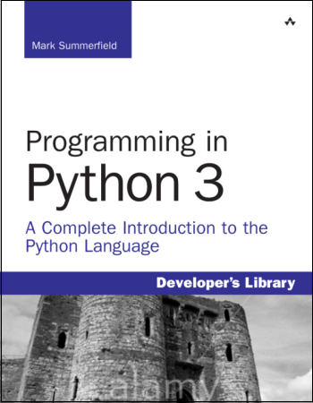

This book has been superceded by Programming in Python 3: A Complete Introduction to the Python Language (Second Edition).
This book teaches you how to write programs using Python 3, the most up to date, powerful and flexible version of Python yet released. Python 3 introduces many new idioms compared with Python 2 that make programming with it easier and at the same time helps produce clearer and more maintainable code. Python 3 is a superb very high level language, that is very easy to learn and use even by relatively inexperienced programmers. And once learned, Python 3 does not impose limits or restrictions, instead offering incredibly powerful and advanced facilities for those who want to learn and use them. Python runs on Windows and most Unix-like operating systems such as Mac OS X, BSD, and Linux.
The book will be useful to people who program professionally as part of their job, whether as full-time software developers, or those from other disciplines, including scientists and engineers, who need to do some programming in support of their work. It will also prove ideal for those Python 2 programmers who need to migrate (or prepare to migrate) to Python 3. The book is also suitable for students—the only prerequisite is some basic knowledge of programming in any language, for example, Basic, Java, or JavaScript, or of course Python itself.
The book is ~500 pages (540 with forematter, index, etc.), and is
published by
Addison-Wesley
Professional.
Previews are available from
Safari, and
the Introduction, first few pages of Chapter 1, all of Chapter 12 (Regular
Expressions), and the index is available from
InformIT
(click the Sample Content tab and then the Download the sample
pages link.).
The book can be bought from other online and local book stores.
Only the English printed editions are definitive—although available in electronic formats, "ebooks" usually restrict your rights, and they are often retypeset which can introduce errors. Translations are arranged by the publisher and their quality can vary considerably.
In view of the EU’s Cyber Resilience Act and an abundance of caution, we have withdrawn all our free software, including our book examples.

For more information on Python 3 see the Python website.
Like all my books and most of my other writings, this book was written using the Lout Typesetting System.
Your Privacy • Copyright © 2006 Mark Summerfield. All Rights Reserved.